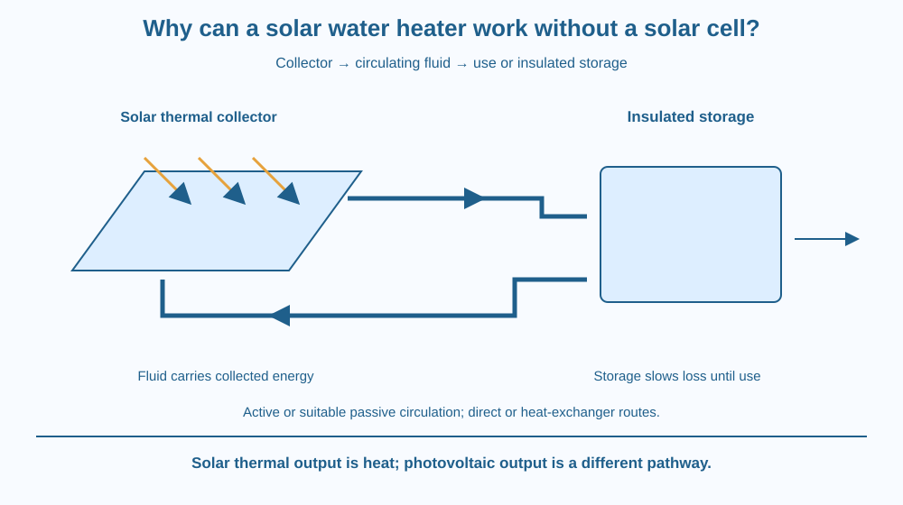

Trace energy through a solar thermal collector, a heat-transfer route and storage. Distinguish heating water directly with solar energy from converting sunlight into electricity. Recognise active and passive circulation options without treating a system diagram as a rooftop installation guide.
A solar water heater can provide warm water without using a photovoltaic panel as the main solar-energy converter. Both technologies receive sunlight, but their intended outputs differ.
In the thermal system, an absorbing collector transfers energy into water or another heat-transfer fluid. The warmed material carries energy toward use or storage. The useful question is how energy reaches the water and remains available, not how an electric generator produces current.
A collector alone is not the whole system. Movement, storage and losses determine whether useful heating reaches the intended place and time.
A solar thermal collector absorbs solar radiation and transfers energy as heat. In a simple water-heating model, an absorber and connected fluid passages bring the energy into a moving liquid.
A photovoltaic cell instead converts part of incoming radiation into electrical output. That conversion is not required for the basic solar-thermal pathway. Some real thermal systems use electrical pumps or controls, but that does not make their main collector a photovoltaic generator.
In a direct system, the water to be used can pass through the collector route. In an indirect system, a separate heat-transfer fluid can pass through a heat exchanger that warms the water. The appropriate arrangement depends on climate, materials and design needs.
Circulation moves energy from the collector toward the tank or load. Active systems use pumps and controls. Some passive systems use a suitable natural-circulation arrangement, drawing on the previously learned movement of warmer and cooler fluid rather than requiring a pump.
An insulated storage tank can keep some of the collected energy available beyond the instant of sunlight input. Insulation slows losses; it does not preserve temperature forever or create extra energy after sunset.
Collector area, orientation, shading and weather affect input. Storage size, pipe losses and water-use timing affect the useful result. A system can therefore receive sunlight while still failing to meet every demand at every time.
Other components may manage temperature, pressure, backup heating and safe operation. Their details require suitable design and installation. A classroom diagram does not establish a complete plumbing or safety specification.
The lesson focuses on the collector-to-liquid-to-storage pathway. It does not repeat the microscopic radiation account, electric induction or the separate box-cooker cover mechanism. Those ideas can be background without replacing the system's specific energy route.
Draw sunlight entering a collector, then energy moving with a fluid toward a tank. Put a use arrow leaving the tank and loss arrows along the collector, pipes and storage.
Make two circulation versions: one with a pump symbol and one labelled suitable passive arrangement. Do not assume deleting the pump from any arbitrary pipe layout creates a working passive system.
Now add a heat exchanger in a copy. Keep the transfer-fluid loop separate from the water-use route. This reveals how energy can cross between fluids without requiring the same water to pass through every component.
The SVG shows a collector, circulating fluid path and insulated storage tank. Incoming sunlight and energy losses are distinguished from water movement. A separate use outlet marks the intended delivered service.
An inset contrasts direct transfer with an indirect heat-exchanger model. Active and passive circulation labels identify design categories without giving pipe heights, pressure settings or installation instructions.
The picture is not to scale and gives no promised outlet temperature or efficiency percentage. Its caption states that solar thermal heating and photovoltaic electrical conversion are different pathways even when one real installation includes both kinds of equipment.

Solar water heaters are used in Indian buildings under varied climates and demand patterns. A suitable design considers local sunshine, water conditions, building structure and operation, not only whether the roof looks sunny in one photograph.
A school energy project can compare the system pathway using approved diagrams. It should not send students onto roofs, open a hot-water circuit or test the temperature of unknown outlets.
Actual selection and installation need appropriate expertise. This lesson provides no product recommendation, current subsidy claim or guaranteed payback. Its purpose is to make the thermal route and its limits understandable.
Use paper and three colours for sunlight, fluid movement and heat loss.
Label the figure conceptual. Do not build a collector, heat a sealed container or use a real rooftop system. Ask a partner which components move water, which transfer heat and which reduce losses. The categories should remain clear without a promised numerical performance.
Why can a solar-thermal system need backup under some conditions even when its collector works? Consider timing, available input and demand rather than assuming a working panel meets every possible load.
Now imagine excellent collection but poorly insulated pipes and storage. Which part of the energy pathway is weakened? A system outcome depends on what happens after energy is absorbed as well as on the collector itself.
What is the main intended output of the collector in this lesson?
Answer: C — A solar-thermal collector absorbs radiation and supplies heat to the system.
Why can an indirect system use a heat exchanger?
Answer: A — The transfer fluid can warm use-water without being the identical circulating liquid.
The collector works but storage loses energy rapidly. What should the explanation include?
Answer: B — The complete pathway, not only absorption, determines the delivered service.
Create a labelled energy-and-fluid map with collector, circulation, storage, use and losses. Include one direct or indirect design choice and state what information a real selection would need.
Your proposal must distinguish thermal heating from photovoltaic conversion and must not prescribe installation, pressure or roof work. Use qualitative arrows rather than an invented efficiency or temperature claim for an actual school building.
Sunlight does not have to become electricity before it can provide a useful energy service. Direct thermal collection can match a heating task more directly, but its usefulness still depends on movement, storage and demand. The pathway matters as much as the familiar solar label.
Solar water heating transfers absorbed solar energy through a collector and fluid route to use or storage; circulation, losses and demand determine the system's useful output.